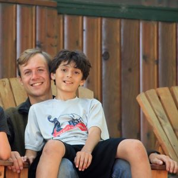

I am Nathan Margrett, an experiential educator, casual photographer, and amateur genealogist currently working as an au pair near Toulouse.
Au pair & Household Manager
Rouffiac-Tolosan, France
2020 - CURRENT
Sceaux, France
2019 - 2020
Lubbeek, Belgium
2017 - 2018
Moretta, Italy
2016 - 2017
As an au pair I work within diverse cultural settings- navigating language barriers, differing customs, and unique challenges. Relationship development and conflict resolution are vital to my role within this sphere. The ability to observe and engage with youth globally as they learn to love, live, and grow has been the driving force behind my work over the past three years.
Childcare Teacher
Elm Grove Child Care Center
2019
Supervision and engagement of children ages 3 months to 6 years in developmentally appropriate activities. Development and facilitation of daily routines and procedures promoting safe environments to play, learn, and grow. Collaboration with a team of peers to promote healthy child development within the Center in addition to the family sphere.
Assistant Program Director
Trip Program Director
Senior Counselor
2014 - 2017
A firm believer in the formative value of residential summer camps I worked in an evolving role throughout my time with North Star Camp. This included logistical planning, staff training, implementation, and oversight of wilderness trip programming for youth ages 8-15. As well as curriculum development, scheduling, special events and instructional evaluation for daily activity programming of +170 youth.
Residential Service Direct Support Professional
2015 - 2016
Social Discovery Squad
2015
Bachelor of Science in Psychology | At-Risk Child & Youth Care Emphasis |
Minor: Archaeology
University of Wisconsin – La Crosse
2015
Completed a multidisciplinary university track focusing on vulnerable/at-risk populations within the context of the family, the community, and the lifespan.
Volunteered, interned, and worked in roles encompassing: school-based programming, community-based developmental programming, early childcare and education, residential centers, group homes, and therapeutic programming.